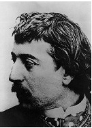

Paul Gaugin (1848-1903), post-izlenimcilik akımının önemli bir şahsiyetidir. Bugün Tahiti resimleri, Vincent Van Gogh ile ilişkisi ve yirminci yüzyıl sanatı üzerindeki etkisi ile hatırlanır.

Sol kanattan bir gazetecinin oğlu olan Gaugin, Paris’te doğdu. Anneannesi, Perulu bir asilzadenin kızıydı. Babasının siyasi nedenlerle Paris’ten ayrılması gerektiğinde aile, Gaugin’in çocukluğunun dört yılını geçirdiği Peru’nun Lima kentine taşındı.
Gaugin, sanat çalışmaya görece geç bir zamanda başladı. Başlangıçta bir ticaret gemisine katıldı ve sonrasında Paris’te borsacı oldu. İlk başta, sadece sanat eserleri topladı, ama sonrasında boş zamanlarında resim yapmaya başladı. 1876’da resmî Salon’da eserlerini sergiledi. 1879 yılıyla beraber izlenimcilere katılmıştı.
Borsa 1882’de çöktüğünde, Gaugin bir tuval üreticisi için satış elemanı olarak çalışmak üzere Kopenhag’a gitti. Kısa bir süre sonra, kendisini sanat çalışmalarına tam zamanlı olarak verdi. Huzursuz ve sabırsız mizaçlı Gaugin, sessiz, ticarî olmayan bir cennet arayışında bir yerden bir yere taşınıp durdu. 1886’da altı ay Britanny’de bir kasaba olan Pont Aven’da yaşadı. Sonra Rouen, Kopenhag, Panama ve Martinique’e seyahat etti. 1888’de Pont Aven’a dönmesi üzerine Vaazdan Sonra Görünüm (Melekle Güreşen Yakup) resmini yaptı. Bozulmuş perspektif ve gerçekçi betimlemeden ziyade sembolik betimlemeyle Gaugin, bir vaazın dinleyicilerin zihinleri üzerindeki etkisini yakalamayı denedi. Sert konturlar ve tuvalin canlı renkleri, Japon baskıları ve ortaçağ vitraylarına olan hayranlığını ortaya serer.
1888’de Vincent Van Gogh, Gaugin’i, bir sanatçı komünü kurmayı umduğu Arles’da ona katılmaya davet etti. Birbiriyle bağdaşmayan mizaçları yüzünden ikili bir kavgayla ayrıldı. Sonraki birkaç yıl Gaugin, Brittany ile Paris arasında gidip geldi. Daha ilkel bir yaşam tarzının özlemiyle gittiği ama yerli el yapımı eksikliğinden dolayı hayal kırıklığına uğradığı Tahiti’ye 1891’de yelken açtı. Cava oymaları ve Kolomb öncesi çömlekçilikten ilham alarak Gaugin, ada ve geleneğinin resim sahnelerini yapmaya başladı.
1893’te Gaugin, basit tahta kalıbı ile detaylı şekilde görselleştirdiği Güney Denizi’ndeki tecrübelerinin romantize edilmiş bir kaydı olan Noa Noa adlı eserini yazdığı Paris’e tekrar yelken açtı. Gösterişli egzotizmi ile arkadaşlarının çoğunu kendinden soğutmayı becerdiği zaman boyunca, iki yıl Fransa’da kaldı. Eserlerinin az ilgi görmesiyle gerilen Gaugin, elindekilerin hepsini sattı ve 1895’te Güney Denizi’ne kalıcı olarak göç etti.
Üç yıl sonra, Nereden Geliyoruz, Neyiz Biz, Nereye Gidiyoruz? adlı kasvetli başyapıtını resmettikten sonra bir intihar girişiminde bulundu. 1901’de Paris’teki satıcısından düzenli bir aylık almaya başladıktan sonra 1903 yılında ölene kadar yaşadığı Marquesas’taki uzak bir adaya taşındı.